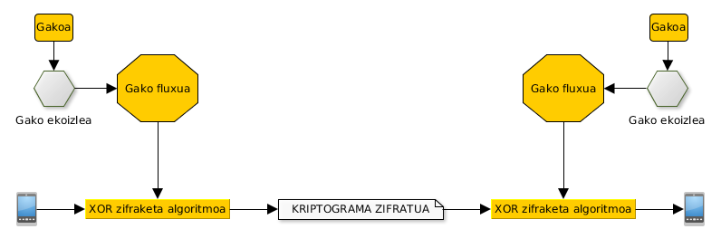

Zifraketa simetrikoa
Mikel Egaña Aranguren
Zifraketa simetrikoa
- Gako pribatuko kriptosistemak
- Historia
- Fluxu zifraketa
- Bloke zifraketa
- Indar erasoak eta gako ahulak
Gako pribatuko kriptosistemak

Gako pribatuko kriptosistemak
Fluxu zifraketa: Bit-fluxu jarraia zifratzea
Bloke zifraketa: Mezua tamaina bereko blokeetan zatitu eta algoritmoa zati bakoitzari aplikatu
Gako pribatuko kriptosistemak: Helburuak
- Mezua ulertezin bihurtu
- Zifratutako informazioa berreskuratu
- Inplementazioa ahalik eta sinpleena
Gako pribatuko kriptosistemak
Oinarrizko teknikak kriptografia klasikoan
- Transposizioa (jatorrizko hizkiak lekuz aldatzen dira soilik)
- Ordezkapena (jatorrizko hizkiak beste hizkiekin aldatzen dira)
Kriptografiaren historia
- 1948 arte, Kriptografia aurre-zientifikoa
- 1948-an, Claude Shannon-ek Informazioaren Teoriaren eta Kriptografia modernoaren oinarrik ezartzen ditu
- 1976-an Diffie & Hellman-ek gako publikoko Kriptografia kontzeptua plazaratzen dute
Esparta-ko Escitaloren metodoa
Paper tira bat makila batean kiribildu eta mezua idatzi
Papera askatu eta mezua bidali
Esparta-ko Escitaloren metodoa


Esparta-ko Escitaloren metodoa
Mezua deszifratzeko makila berdin-berdina beharrezkoa da
Paper tira makilaren inguruan kiribildu eta mezua irakurri
Sistema honen gakoa makilaren diametroa da
Escitaloren metodoa 2.0
Mezua zutabetan banatu
Gakoa: zutabe kopurua eta ordena
Escitaloren metodoa 2.0

Escitaloren metodoa 2.0
Kriptoanalisia
- Konbinatorian oinarritzen da
- Blokeen tamaina kalkulatu
- Blokeak orden ezberdinean konbinatu zentzua duen mezua aurkitu arte
Cesar Metodoa
Zifraketa monoalfabetikoa
Julius Caesar-ek erabilia
Hizki bakoitzak alfabetoan duen posizioari 3 gehitzean datza
Cesar Metodoa

Atbash metodoa (Ispilua)
Zifraketa monoalfabetikoa
Hebrear alfabetotik datorren teknika
Hizki bakoitza bere "aurkakoarekin" aldatu
Atbash metodoa (Ispilua)

Afin metodoa
Zifraketa monoalfabetikoa
Cesar Metodoaren orokortzea
E(a;b)(M) = (aM + b) mod N
N alfabetoaren hizki zenbakia da
Cesar: afin E(1,3)
Hiztegi metodoa
Zifraketa monoalfabetikoa
Korrespondentzien taula "eskuz" sortu

Polybius metodoa
Zifraketa monoalfabetikoa
Zenbakiak edo hizkiak

Ordezkapen metodo monoalfabetikoak
Estatistikan oinarritutako metodoa
Al-Kindi-k 9 mendean sortua
Jatorrizko hizkia beti ordezkatzen da hizki berdinagatik
Hizkuntza bakoitzean badakigu hizki bakoitza zenbat agertzen den
Badakizkigu zeintzuk diren gehien agertzen diren 2/3/4 hizkiko hitzak hizkuntza bakoitzean
Ordezkapen metodo monoalfabetikoak
Probak egin, ondorioztatu
Zifratutako textua zenbat eta luzeago, hobeto
Jatorrizko mezuaren textuaren hizkuntza jakin behar dugu
Ordezkapen metodo monoalfabetikoak
Kriptoanalisia zailtzeko metodoak
- Hutsuneak kendu
- Jatorrizko textua aldatu, esanahia mantenduz (Adib. SMS, WhatsApp, ...)
- Esanahia duten piktogramak erabili (kodeen liburua)
- 1-1 korrespondentzia ekidin, hizki berdina behin baino gehiagotan erabiliz (Sistema Polialfabetikoak)
Alberti-ren diskoa
Lehenengo sistema polialfabetikoa
Bi disko zentrokide, barrukoa mugikorra
Zifraketan barrukoa mugitzen doa, X alfabeto (Korrespondentzia) ezberdin erabiltzen dugularik
Gakoa jatorrizko posizioa da, zenbat hizki pasa ondoren biratzen den diskoa, zenbat biratzen den diskoa, eta zein zentzutan
Enigma makina
Historia osoko elementu kriptografiko ezagunena
Jatorrian gizartean erabiltzeko
Erabilera militarrerako eraldatua, batez ere Naziek
Enigma makina
Marian Rejewski matematikari poloniarrak Enigma desenkriptatzeko oinarriak ezarri zituen:
- "Bonba" deituriko makina elektromekanikoak
- Naziek 2 gurpil gehitu zioten Enigmari eta "Bonbak" ez ziren gai
Enigma makina
Alan Turing-en taldea informazio horretatik abiatuz "bonba" berriak sortu zituen
Ordezkapen metodo polialfabetikoak
Kriptoanalisia
- Metodo estatistikoak
- Gakoen tamaina txikitzeko patroiak, zati ezberdinen ordena, etab. bilatzen dira
- Sistema monoalfabetikotan baino textu zifratu gehiago behar da
Fluxu zifraketa metodoak
Mezu osoa zifratu ordez, bit bakoitza zifratzen dute, banan-bana
Denbora errealeko komunikaziotan erabilia (Ezin da itxaron mezu osoa izan arte zifratzeko eta bidaltzeko)
Fluxu zifraketa metodoak
Gakotik abiatuta, ekoizle sasi-aleatorioa erabiltzen da gako-fluxua sortzeko
Kriptograma sortzeko XOR eragiketa egiten da zifratu behar den bit-a eta gako-fluxuaren artean
Fluxu zifraketa metodoak

Vernam metodoa
XOR zifraketa textua eta luzera berdineko ausazko gako baten artean egiten du
Ekoizlea benetan aleatorioa da
Vernam metodoa
Gakoa (gako-fluxua) "erabilpen bakarreko libreta" da:
- Behin bakarrik erabili ahal da
- Mezu irakurleari aurretik bidali behar zaio
- Matematikoki frogatua dago apurtezina dela
Ez da oso erabilgarria
Beste fluxu zifraketa metodoak
Vernam-en metodoan oinarrituak
Gako pseudo-aleatorioak erabiltzen dituzte, hazi batetik eta ekoizpen algoritmo batetik sortuak
Hazia eta ekoizpen algoritmoa jakinda, gako pseudo-aleatorioa bereraikitzea dago (Hazi posible ezberdinen kopuruaren arabera)
Beste fluxu zifraketa metodoak
Ez dira matematikoki apurtezinak
Adibideak:
- RC4 (ARC4): TLS/SSL , WEP eta WPA-an (Apurtua)
- A5/1: GSM-an (A5/1 eta A5/2 apurtuak)
Blokeka zifratzeko metodoak
Jatorrizko mezua tamaina finkoko blokeetan banatzea:
- Tamaina nahikoa txikia bada, fluxu-zifratutzat har daiteke
- Mezuaren tamaina blokearen tamainaren multiploa ez denean betetzeko algoritmoak daude
Blokeka zifratzeko metodoak
Jatorrizko bloke bakoitzak zifratutako bloke bat sortzen du
Blokeen arteko iterazioak, permutazioak eta beste operazioak gehitu daitezke
Blokeka zifratzeko metodoak
- DES
- DES hirukoitza
- AES
- IDEA
- KASUMI
DES (Data Encryption Standard)
- 1975
- Lehenengo estandarra
- 64 bit-eko blokeak
- 56 biteko gakoak (64 - 8 NSA-ak proposatuta berau apurtzen gai izateko -???-)
- 16 itzuli
- Gaur egun 24 ordutan baino arinago apurtzea dago
DES hirukoitza
- DES-en ondorengoa izateko pentsatua, baina gaur egun oso gutxi erabilia
- Oraindik kreditu txarteletan erabiliak
- DES-en 3 exekuzio (Zifratu - deszifratu - zifratu)
- 64 bit-eko blokeak
- 168 bit-eko gakoak (3*56), benetazko gakoa 112 bit
AES (Advanced Encryption Standard)
- Rijndael
- Estatu batuetan NIST erakundeak estandarizatua
- DES hirukoitza ordezkatu
- Erabilera oso hedatua
- 128 bit-eko blokeak
- 128, 192 edo 256 bit-eko gakoak
- 8 itzuli (128-ko gakoak) , 12 itzuli (192-ko gakoak), 14 itzuli (256-ko gakoak)
IDEA (International Data Encryption Algorithm)
- 64 bit-eko blokeak
- 128 biteko gakoak
- 8 itzuli
- Segurutzat hartzen da (gako ahul batzuekin izan ezik)
- OpenPGP-ek eskaintzen du
KASUMI (A5/3)
- 64 bit-eko blokeak
- 128 biteko gakoak
- 8 itzuli
- 3G sareetan erabilia
Indarrezko erasoak
Beti aurkitzen dute soluzioa
Gako posible guztiak probatzean datza
Gako espazioa eta zifraketa algoritmoa ezagunak izan behar dira
Beti ez dira posible, denbora-kostua medio adibidez
Indarrezko erasoak
Gako espazioa:
- 56 bit: 256 aukera
- 128 bit: 2128 aukera
- 256 bit: 2256 aukera
Indarrezko erasoak
Super-ordenagailu batekin:
- 56 bit: 0,04 segundu
- 128 bit: 7.193.522.047 milurte
- 256 bit: ...
Indarrezko erasoak
Erasoa inteligenteagoa egin ahal da:
- Hiztegia bat erabiliz
- Gakoaren jabearen datuekin
- ...
Gako pribatuko kriptosistemak
Gako ahulak
- Algoritmo bakoitzaren ezaugarrien arabera agertu daitezke
- Jokaera desegokia duten gakoak
- EK(M)=M
- EK(EK(M))=M
- DK2(EK1(M))=M